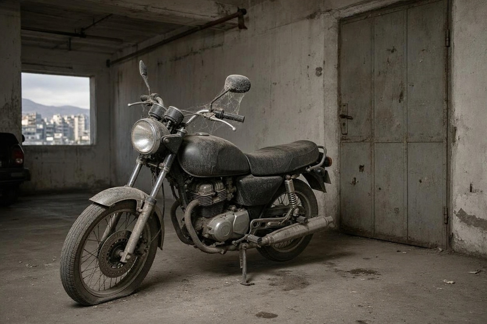
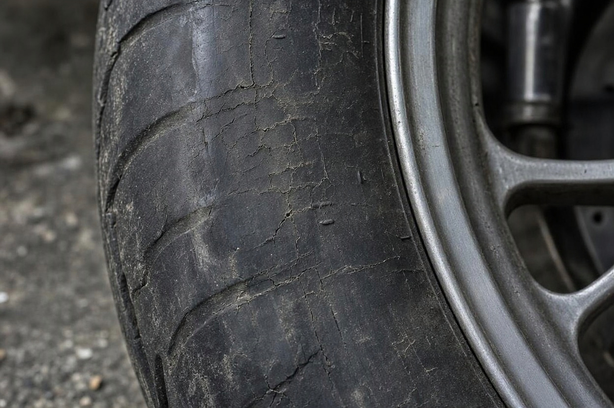
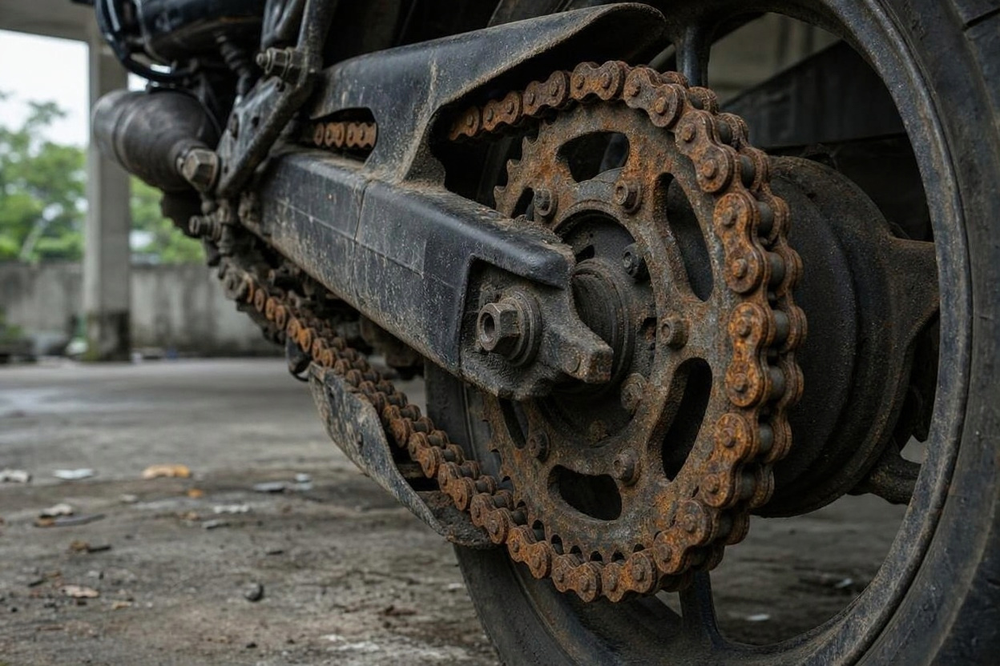
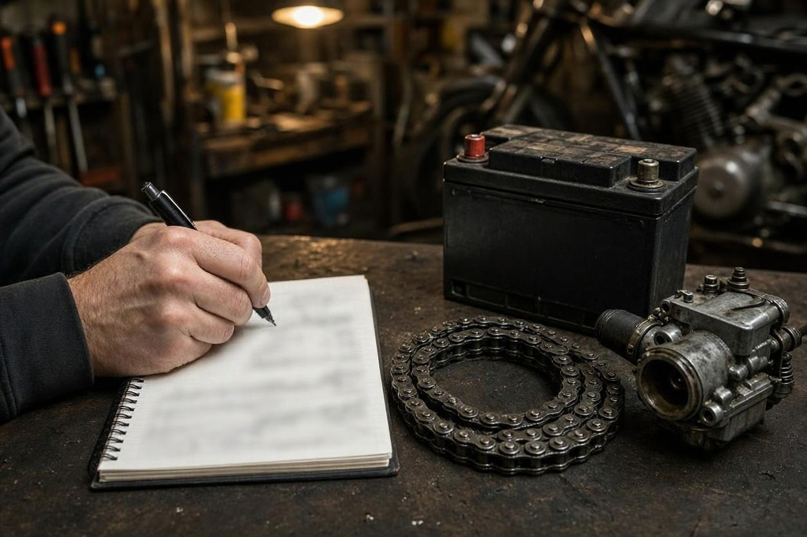
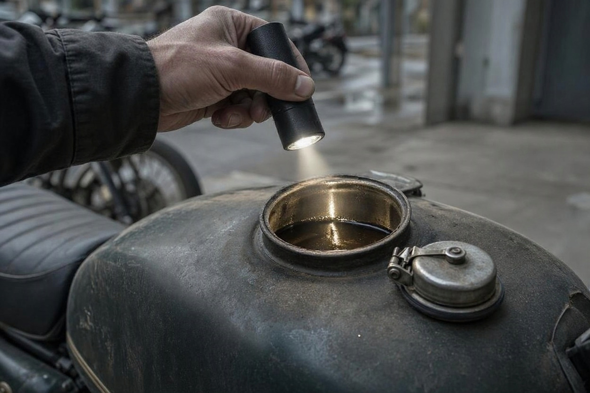

خرید موتور خوابیده کم کارکرد؛ هزینه راه اندازی را چطور برآورد کنیم؟
آگهی جذاب است: موتور چندساله با کارکردی که انگار تازه از نمایندگی بیرون آمده. فروشنده میگوید موتور سالها در پارکینگ مانده و «فقط یک باتری میخواهد». روی کاغذ معاملهی خوبی است، به شرط اینکه آن «فقط یک باتری» در عمل به لاستیک، کاربراتور، ترمز و زنجیر نرسد.
خرید موتور خوابیده یعنی خرید موتوری که مدت طولانی استفاده نشده، و هزینهی واقعیاش قیمت آگهی بهعلاوهی هزینهی برگرداندنش به حالت کار است. در این راهنمای مجموعه کارشناسی خودرو و موتور کارماچک توضیح میدهیم خواب طولانی چه قطعاتی را درگیر میکند و چطور پیش از خرید، هزینهی راهاندازی را برآورد کنید.
موتور کمکارکردی که مدتها خوابیده، فقط وقتی خرید خوبی است که قیمتش هزینهی راهاندازی را پوشش بدهد. لاستیک، باتری، روغن، روغن ترمز، کاربراتور یا سیستم سوخت، زنجیر و قطعات لاستیکی با گذشت زمان فرسوده میشوند، حتی اگر موتور راه نرفته باشد. فهرست این موارد را بررسی کنید، برای هر کدام قیمت بگیرید و از قیمت پیشنهادی کم کنید.
خلاصه در یک دقیقه
- کارکرد کم یعنی فرسایش مکانیکی کم، نه فرسودگی زمانی کم؛ لاستیک و قطعات لاستیکی با گذشت سال پیر میشوند.
- بعضی هزینهها تقریباً قطعیاند، مثل باتری، روغن و روغن ترمز؛ بعضی به وضعیت موتور بستگی دارند.
- اینکه موتور قبل از خواب آماده شده یا نه، تفاوت بزرگی در هزینهی راهاندازی ایجاد میکند.
- موتوری را که فروشنده پیش از بازدید «راه انداخته»، با دقت بیشتری ببینید.
- هزینهی برآوردشده را همراه با یک حاشیهی احتیاط، پیش از مذاکره از قیمت کم کنید.
چرا کارکرد کم برای موتور خوابیده کافی نیست؟
کیلومترشمار فقط فرسایش ناشی از حرکت را نشان میدهد. اما خیلی از قطعات موتورسیکلت با گذشت زمان پیر میشوند، چه موتور راه برود چه نه. لاستیک سخت و ترکدار میشود، روغن ترمز رطوبت جذب میکند، کاسهنمدها و شلنگها خشک میشوند و سوخت مانده در باک و کاربراتور کهنه میشود.
به همین دلیل یک موتور چندساله با کارکرد کم، گاهی هزینهی راهاندازی بیشتری از یک موتور همسال با کارکرد معمولی دارد که مرتب سرویس شده است. کارکرد کم یک امتیاز است، اما فقط وقتی که خواب موتور اصولی بوده باشد.
خواب طولانی کدام قطعات موتور را خراب می کند؟
این قطعات بیشترین آسیب را از بیحرکتی طولانی میبینند. هیچکدام از نشانهها بهتنهایی تشخیص قطعی نیست، اما هر کدام یک قلم احتمالی در فهرست هزینهی شماست.
لاستیک ها
لاستیکی که سالها مانده، حتی با آج کامل، ممکن است سخت شده باشد، ترکهای ریز روی دیواره داشته باشد یا در نقطهی تماس با زمین تغییر شکل داده باشد. کد تاریخ تولید روی دیوارهی لاستیک را پیدا کنید و ترکها را از نزدیک ببینید. لاستیک پیر چسبندگی کمتری دارد و موضوع ایمنی است، نه فقط هزینه.

باک، کاربراتور و سیستم سوخت
سوخت کهنه در کاسهی کاربراتور رسوب میگذارد و میتواند ژیگلورها و مسیرهای ریز را بگیرد. نتیجهاش استارت سخت، دور آرام نامنظم یا خاموش شدن در توقف است. در موتورهای انژکتوری، پمپ بنزین و صافی هم ممکن است درگیر شوند. داخل باک فلزی را هم با چراغقوه ببینید؛ زنگزدگی باک دردسر جداگانهای است.
باتری و سیم کشی
باتریای که مدت طولانی خالی مانده، معمولاً دیگر شارژ کامل نمیگیرد و تعویضش را باید تقریباً قطعی فرض کرد. در پارکینگهای مرطوب یا جایی که موش داشته، سیمها و سوکتها را هم دنبال جویدگی و اکسید شدن بگردید.
ترمز و روغن ترمز
روغن ترمز با گذشت زمان رطوبت جذب میکند و پیستون کالیپر ممکن است گیر کند. دیسکها سطح زنگزده پیدا میکنند. اگر اهرم ترمز نرم و اسفنجی است یا چرخ پس از رها کردن ترمز آزاد نمیچرخد، سرویس ترمز را در فهرست بگذارید.
زنجیر، دنده و قطعات لاستیکی
زنجیری که روغن نخورده و در رطوبت مانده، زنگ میزند و گاهی حلقههایش خشک و گیر میشوند. کاسهنمد کمکهای جلو، شلنگها و لاستیکهای لرزهگیر هم با زمان خشک میشوند؛ نشتی روغن روی میلهی کمک جلو یکی از نشانههای رایج است.

روغن و داخل موتور
روغن کهنه باید عوض شود؛ این را جزو هزینههای قطعی حساب کنید. نگرانی بزرگتر رطوبت و زنگزدگی سطح سیلندر در خوابهای طولانی و جای مرطوب است که با بازدید ساده دیده نمیشود. صدای غیرعادی، دود زیاد یا کمپرس ضعیف نشانههایی است که باید با بررسی تخصصی روشن شود.
پیش از خرید، وضعیت موتور خوابیده را روشن کنید
بیشتر هزینههای پنهان موتور خوابیده با بازدید کوتاه دیده نمیشوند. یک بررسی تخصصی کمک میکند فهرست هزینهها را بر اساس واقعیت بنویسید.
جزئیات کارشناسی موتورسیکلتاز فروشنده موتور خوابیده چه بپرسیم؟
جواب این سؤالها بیشتر از هر چیز روی هزینهی راهاندازی اثر دارد:
- موتور چه مدت و کجا خوابیده؟ پارکینگ سرپوشیده و خشک با فضای باز یا زیرزمین نمناک فرق زیادی دارد.
- قبل از خواب چه کارهایی انجام شد؟ تخلیهی کاربراتور، جدا کردن باتری و تعویض روغن، احتمال خرابی را کمتر میکند.
- آخرین بار کی روشن و رانده شد؟ روشن کردن چنددقیقهای در جا با راندن واقعی فرق دارد.
- اخیراً کاری روی موتور انجام شده؟ اگر پیش از آگهی باتری یا لاستیک عوض شده، فاکتور یا توضیح بخواهید.
- بیمه و خلافی در چه وضعی است؟ موتوری که مدتها استفاده نشده ممکن است بیمهی شخص ثالث منقضی یا بدهی ثبتشده داشته باشد. اینها را از مراجع رسمی استعلام کنید.
هزینه راه اندازی موتور خوابیده را چطور برآورد کنیم؟
برای برآورد هزینه به عدد ثابت نیازی ندارید؛ به یک روش منظم نیاز دارید. قیمت قطعه و اجرت برای هر مدل و هر شهر فرق میکند، پس عددها را برای همان موتور و از همان بازار بگیرید.
- فهرست را بنویسید:بعد از بازدید یا کارشناسی، هر قطعهای را که نشانهی خرابی دارد یا بر اثر زمان باید عوض شود، یادداشت کنید.
- اقلام را دستهبندی کنید:هزینههای تقریباً قطعی، محتمل و احتمالی را جدا کنید. جدول پایین کمک میکند.
- برای همان مدل قیمت بگیرید:از یک یا دو تعمیرگاه یا فروشندهی قطعه، قیمت قطعه و اجرت را برای همان مدل و سال بپرسید.
- دسترسی به قطعه را بسنجید:برای مدلهای وارداتی یا قدیمی، پیدا نشدن یا دیر رسیدن قطعه خودش هزینه است.
- حاشیهی احتیاط بگذارید:در موتور خوابیده معمولاً بعد از باز کردن، ایراد تازهای پیدا میشود؛ بخشی از بودجه را برای همین کنار بگذارید.
- مقایسه کنید:قیمت این موتور بهعلاوهی هزینهی راهاندازی را با قیمت یک موتور هممدل که مرتب استفاده و سرویس شده مقایسه کنید.
| قلم | نشانه | احتمال نیاز | هزینهی نسبی |
|---|---|---|---|
| باتری | استارت ضعیف یا شارژ نگرفتن | تقریباً قطعی | کم |
| روغن موتور و فیلتر | روغن تیره یا نامشخص بودن زمان تعویض | تقریباً قطعی | کم |
| روغن ترمز و سرویس کالیپر | اهرم نرم، چرخ گیر | محتمل | کم تا متوسط |
| تمیزکاری کاربراتور یا سیستم سوخت | استارت سخت، دور نامنظم | محتمل | متوسط |
| لاستیکها | ترک دیواره، تاریخ تولید قدیمی | محتمل | متوسط |
| زنجیر و دنده | زنگزدگی، حلقههای خشک | محتمل | متوسط |
| کاسهنمد کمک جلو | نشتی روی میلهی کمک | احتمالی | متوسط |
| باک زنگزده یا سیمکشی آسیبدیده | زنگ داخل باک، جای جویدگی سیم | احتمالی | متوسط تا زیاد |
| تعمیر داخل موتور | کمپرس ضعیف، صدا یا دود غیرعادی | کمتر رایج | زیاد |
«هزینهی نسبی» فقط مقایسهی اقلام با یکدیگر است و رقم واقعی به مدل موتور و بازار قطعه بستگی دارد. وقتی جمع برآوردتان آماده شد، آن را مبنای مذاکره قرار دهید، نه حدس فروشنده.

اگر میخواهید بدانید موتور چطور باید خوابانده شود تا این هزینهها پیش نیاید، راهنمای خواباندن موتورسیکلت در زمستان همین موارد را از نگاه مالک توضیح میدهد.
چه زمانی از خرید موتور خوابیده بگذریم؟
بعضی نشانهها یعنی برآورد هزینه آنقدر نامطمئن است که ریسک معامله از سودش بیشتر میشود:
- موتور به هیچ عنوان روشن نمیشود و فروشنده اجازهی بررسی بیشتر نمیدهد.
- کمپرس ضعیف، صدای کوبش یا دود زیاد که دلیلش روشن نیست.
- زنگزدگی گستردهی باک، شاسی یا قطعات اصلی.
- مدارک ناقص، بدهی سنگین ثبتشده یا ابهام در مالکیت.
- مدلی که قطعهی اصلیاش بهسختی پیدا میشود و فهرست هزینه طولانی است.

اگر هنوز مدل مشخصی در ذهن ندارید و فقط کارکرد کم شما را جذب کرده، فهرست بهترین موتورسیکلت تا یک میلیارد تومان کمک میکند گزینههای دیگر را هم کنار این موتور بسنجید.
کارماچک چه کمکی می کند؟
کارماچک یک ارائهدهندهی خدمات کارشناسی خودرو و موتورسیکلت در ایران است. ما فقط ایراد را شناسایی نمیکنیم؛ اثر آن روی هزینه تعمیر و ارزش واقعی معامله را هم مشخص میکنیم.
جمع بندی
خرید موتور خوابیده با کارکرد کم میتواند معاملهی خوبی باشد، به شرط اینکه قیمت را با هزینهی راهاندازی بسنجید، نه با عدد کیلومترشمار. باتری، روغن و روغن ترمز را تقریباً قطعی حساب کنید، لاستیک، سیستم سوخت، ترمز و زنجیر را با بازدید بسنجید و برای ایرادهای پنهان حاشیهی احتیاط بگذارید. اگر جمع اینها قیمت را به یک موتور مرتبسرویسشده نزدیک کرد، گزینهی دوم معمولاً کمدردسرتر است.
برآورد هزینه را بر پایه کارشناسی بنویسید
اگر موتور خوابیدهای را برای خرید در نظر دارید، یک گزارش مستقل از وضعیت فنی و بدنه، فهرست هزینهها و مذاکره را دقیقتر میکند.
درخواست کارشناسی موتورسیکلتسؤالات متداول
موتور کمکارکرد خوابیده بهتر است یا موتور پرکارکرد سالم؟
بستگی به وضعیت هر دو دارد. موتور خوابیدهای که اصولی نگهداری شده میتواند گزینهی خوبی باشد، اما موتوری که بیمراقبت مانده ممکن است هزینهی راهاندازی بیشتری از یک موتور پرکارکرد مرتبسرویسشده داشته باشد. قیمت هر کدام را بهعلاوهی هزینهی رساندنش به وضعیت سالم مقایسه کنید.
اگر موتور خوابیده با یک باتری نو روشن شد، یعنی سالم است؟
نه لزوماً. روشن شدن فقط یعنی برق و سوخت به موتور میرسد. لاستیک پیر، روغن ترمز کهنه، کاربراتور نیمهگرفته، زنجیر زنگزده یا مشکل داخل موتور ممکن است بعد از روشن شدن هم باقی باشد. رفتار موتور در استارت سرد، دور آرام و رانندگی را هم بسنجید.
چطور بفهمم لاستیک موتور قدیمی است؟
روی دیوارهی بیشتر لاستیکها کدی هست که هفته و سال تولید را نشان میدهد. بهجز تاریخ، ترکهای ریز دیواره، سختی بیش از حد و تغییر شکل در یک نقطه هم نشانهی پیری است. لاستیک پیر حتی با آج کامل ممکن است چسبندگی کافی نداشته باشد.
آیا میشود موتور خوابیده را قبل از خرید روشن کرد؟
بهتر است روشن کردن با حضور شما یا کارشناس انجام شود تا استارت سرد را ببینید. اگر موتور سالها خاموش بوده، روشن کردن عجولانه بدون بررسی روغن و سیستم سوخت ریسک دارد. اجازه دهید فروشنده یا کارشناس پیش از استارت، سطح روغن و وضعیت سوخت را بررسی کند.
هزینهی راهاندازی را از قیمت کم کنم یا فروشنده خودش تعمیر کند؟
کم کردن از قیمت معمولاً شفافتر است، چون کیفیت قطعه و تعمیر را خودتان انتخاب میکنید. اگر فروشنده تعمیر را انجام میدهد، فاکتور قطعات و اجرت را بخواهید و بعد از تعمیر دوباره موتور را بررسی کنید. در هر حالت، توافق را در قولنامه بنویسید.
موتور خوابیده را بعد از خرید چطور راه بیندازم؟
پیش از راندن، باتری را تعویض یا شارژ کنید، روغن و فیلتر را عوض کنید، روغن ترمز و عملکرد ترمزها را بررسی کنید، باد و وضعیت لاستیکها را ببینید و زنجیر را روغنکاری کنید. بعد با مسیرهای کوتاه و آرام شروع کنید و رفتار موتور را زیر نظر داشته باشید.